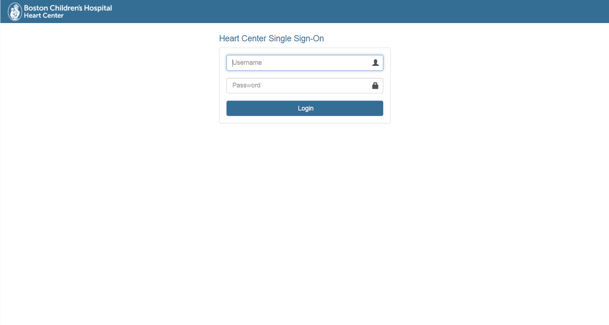
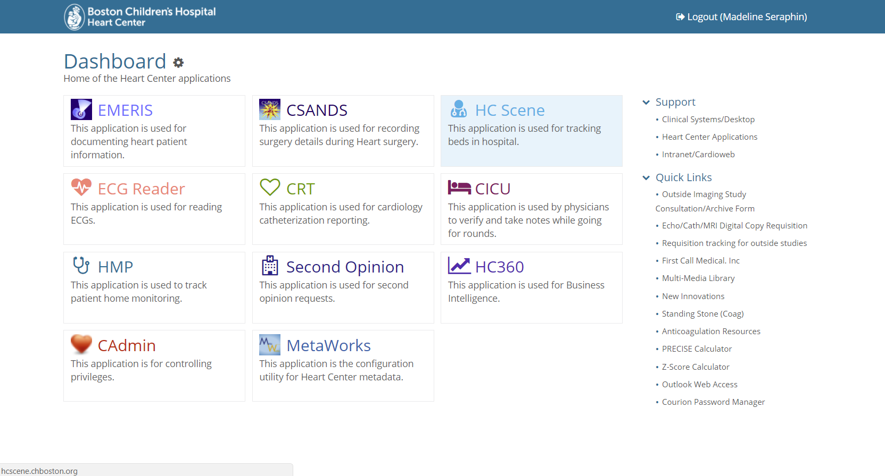
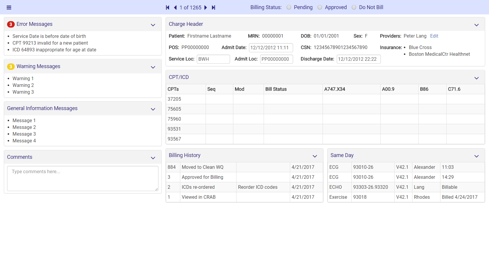
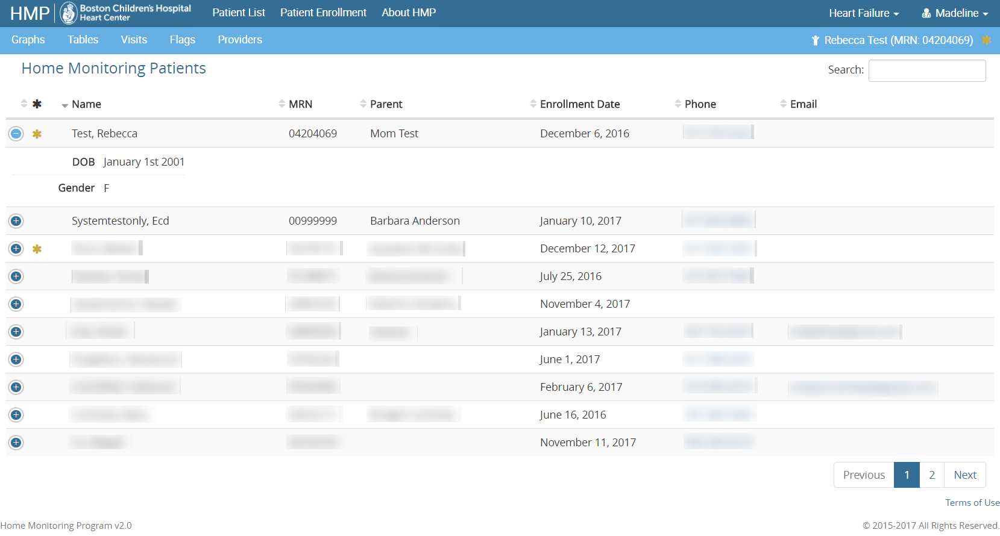

Heart Center UI Designs
2017, for the Boston Children's Hospital Heart Center
As the UI Design Co-op at the Boston Children's Hospital Heart Center, my role was to improve the interface designs of existing applications and create intitutive interfaces for new applications. I created mockups, made working prototypes, and implemented each design with the help of developers on my team. Here are screenshots of some of the applications I worked on.Single Sign-On
The Heart Center was working on implementing a single sign-on system that would allow users (health care providers) to access all the Heart Center applications without having to sign into each one individually. I designed a clean, straightforward way to sign in quickly.
Dashboard
After logging in with the Single Sign-On, the users wanted to a place where they could open all the Heart Center applications and have easy access to other useful tools. I designed a dashboard with the names and icons of each application at the forefront, making it easy for users to find what they're looking for right away. On the right side are links for technical support and other quick links that the users wanted to be easily accessible. I added the light highlight color when hovering over an application to make the interface a little more fun.
Cardio Billing II
The billing department within the Heart Center was transitioning from the desktop application that they knew very well to a new web application. I met with them to figure out how we could best design this new app to be recognizable but also to improve any areas that were previously lacking. The interface we came up with had the same visual layout as their desktop application but had more thoughtful organization and less clutter.
Home Monitoring Program
The Home Monitoring Program is an application that allows the parents of patients to log in and enter their child's vitals everyday and allows health care providers to log in and monitor the data to make sure everything is okay. This is the homepage of the provider interface where health care providers can select a patient and see all of their data. Due to HIPAA regulations, all patient protected information has been redacted.